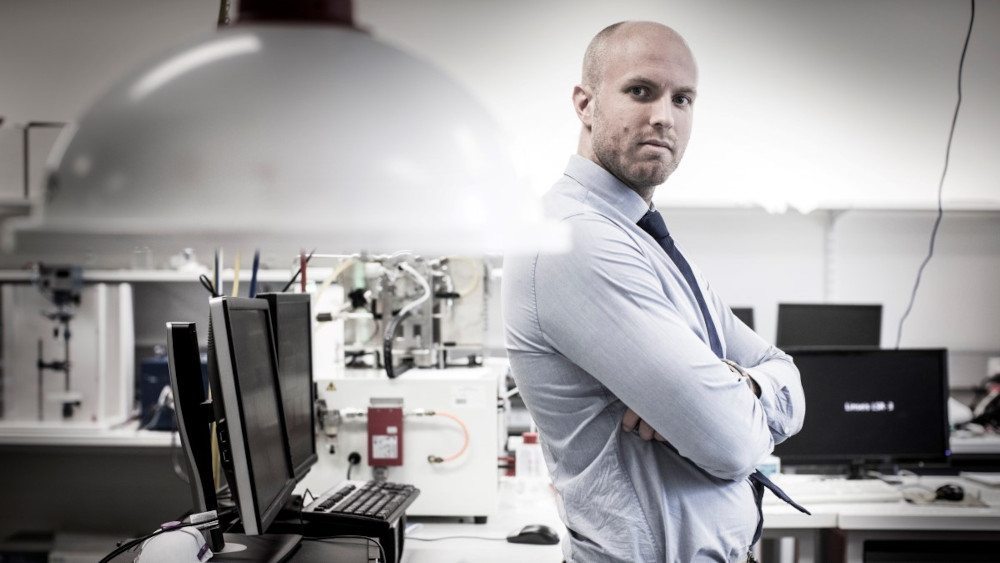

about

Hi, my name is Jonathan Knott and I’m a Researcher, Engineer and (sometimes) Entrepreneur currently living in Wollongong, Australia.
Please feel free to get in contact.
Engineer, Researcher, Entrepreneur.
Hi, my name is Jonathan Knott and I’m a Researcher, Engineer and (sometimes) Entrepreneur currently living in Wollongong, Australia.
Please feel free to get in contact.
Providing day-to-day operations leadership and support for a 100+ person flagship research institute at the University of Wollongong. Responsible for:
Working on a DMTC Ltd.-funded project on superconducting devices for naval applications, with partners QUT, DSTg, and Thales Australia.
Leading and supporting UOW-node activities of a ~$10M Australian Research Council-funded multi-institution, multi partner research hub on safe and reliable energy storage and conversion technologies. Responsible for:
In 2017 I co-founded Upward Manufacturing to provide 3D printing and engineering services, education and outreach to the Illawarra. Responsible for:
Project managing and working on the $10.5M Smart Sodium Storage System (S4) Project. Responsible for:

M. Maeda, J.H. Choi, J.C. Knott, J.H. Kim, G. Hahn, H. Kang, S. Hahn, S. Choi, Disorder anisotropy of layered structure in multi-band MgB2 superconducting materials with high critical current performance, Journal of Alloys and Compounds. 934 (2023) 167873. link
J.C. Knott, S. Nielsen, P. O’Brien, R. Hickey, S. Van, A. Bailey, F. Souto, M. Newman, R.R. Taylor, High-Temperature Superconductors: Technologies and Solutions for Naval Applications, Prodeedings of IMC2022, Sydney, Australia, 2022: p. 17.
S. Elphick, D. Robinson, S. Perera, J. Knott, J. David, G. Drury, Impact of Sustained Supply Voltage Magnitude on Consumer Appliance Behaviour, IEEE Transactions on Power Delivery. (2022) 1–1. link
S. Elphick, D.A. Robinson, J.C. Knott, S. Perera, I. Afandi, N. Wilmot, Quantifying the impact of supply frequency adjustments for DER control on consumer appliances, Proceedings of the 2022 20th International Conference on Harmonics & Quality of Power (ICHQP), 2022: pp. 1–6. link
A. Truran, A. Drenoyanis, I. Babic, S. Elphick, J.C. Knott, Battery energy storage systems in Sewage Pumping Stations: Site resilience and other opportunities, in: OZWater’21, 2021: p. 189. link
F. Gebert, J. Knott, R. Gorkin III, S.-L. Chou, S.-X. Dou, Polymer electrolytes for sodium-ion batteries, Energy Storage Materials. 36 (2021) 10–30. link
I. Babic, S. Elphick, J. Knott, A. Drenoyanis, A. Truran, Design of a Battery Energy Storage System for Critical Infrastructure, Proceedings of the 2020 Australasian Universities Power Engineering Conference (AUPEC), IEEE, 2020: pp. 135–140. link
D. Patel, W. Qiu, M. Mustapić, J.C. Knott, Z. Ma, D. Gajda, M. Shahabuddin, J. Xu, S. Choi, M. Tomsic, S.X. Dou, Y. Yamauchi, J.H. Kim, M.S.A. Hossain, Evaluation of a solid nitrogen impregnated MgB 2 racetrack coil, Supercond. Sci. Technol. 31 (2018) 105010. link
C. McLauchlan, J. David, D. Robinson, S. Elphick, J. Knott, Wollongong University Laboratory Microgrid: a Design for Flexibility, Proceedings of the 2018 Australasian Universities Power Engineering Conference (AUPEC), IEEE, 2018: pp. 1–6.
J. Knott, D. Sutanto, K.M. Muttaqi, D. Robinson, S. Elphick, S.X. Dou, H. Bustamante, R. Muller, Developing novel sodium-ion batteries for sewage pumping stations, Proceedings of the Ozwater’18 Conference (2018) 1–8. link
J.C. Knott, Design, modelling, characterisation and analysis of biasing techniques for saturated-core Fault Current Limiters, (2016).
J.C. Knott, P.A. Commins, J.W. Moscrop, S.X. Dou, Design Considerations in MgB2-Based Superconducting Coils for Use in Saturated-Core Fault Current Limiters, IEEE Transactions on Applied Superconductivity. 24 (2014) 1–4. link
J.C. Knott, J.W. Moscrop, Increasing energy efficiency of saturated-core fault current limiters with permanent magnets, IEEE Transactions on Magnetics. 49 (2013) 4132–4136. link
J.C. Knott, K. Radhanpura, R.A. Lewis, Annealing of Sb-doped GaAs to optimize for terahertz emission, (2010).
J. Knott, R.A. Lewis, Studies of the electroresistive properties of electronic oxides, (2009).
J.C. Knott, R.A. Lewis, Metastability in the resistance of polycrystalline La0.8Li0.2MnO3, Physica Status Solidi (RRL)–Rapid Research Letters. 3 (2009) 154–156.
J.C. Knott, D.C. Pond, R.A. Lewis, Metal-insulator transition and electroresistance in lanthanum/calcium manganites La1-xCaxMnO3 (x = 0–0.5) from voltage-current-temperature surfaces, PMC Physics B. 1 (2008) 1–15.
J. Knott, Charging ahead: how Australia is innovating in battery technology, (2018).
Download my latest CV here.
Please feel free to get in contact via email, or check out my profiles on these services: